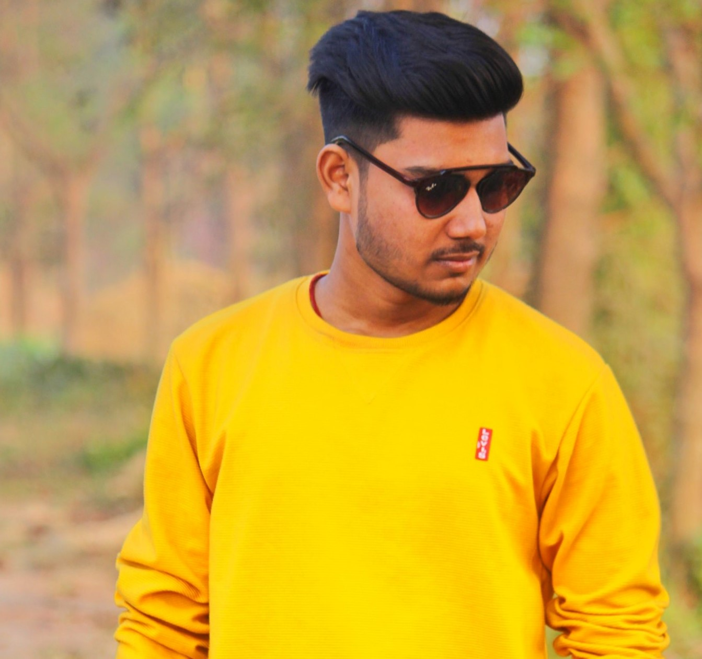

Hey! I am Mridul kanti; I am a 2nd year computer science student at Chandigarh University. I am the founder of The Untold Love and Co-founder of The uncool Boi and Boost Your Beauty.I love Web Development, coding and love to do new things and explore different fields. I some somtimes love to write poems and quotes. One of my Quotes is - Hustle like its monday everyday.
HI, I am Aditi. I am a first year student of Hotel Management student at Chandigarh University. I am the founder of Boost Your Beauty(Blog) and I also make videos on YouTube and Instagram. I love to write blogs on fashion and lifestyle. My hobby is to sing,cook and dance. I believe "There is no shortcut to success."
Holla , I am Harsh Roy . I am a Third Year IT student at Techno India Institute of Technology ,Kolkata.I am Head Moderator in Aman Dhatarwal Discord , Along with it I love Micro Photography , I run a photography page on Instagram where I post my photography work. “Photography is the story I fail to put into words.”
Hey, I am Ritik Singh . I am first a year B.A student at Dharbhanga University.I am a Gamer and streamer in YouTube(Toxic Tyrent).I love to play Games Like BGMI , Among Us and many more, You can join me . My Words - "Play together and grow together "
I am Sumit Mahto, I am a 2nd year B.Sc student at Patliputra University,Bihar. I am Preparing for UPSE, I want to be a Civil Servent and serve my country.Along with studies I love to play Games, edit pictures and listen music. I believe “ You only live once, but if you do it right, once is enough.”